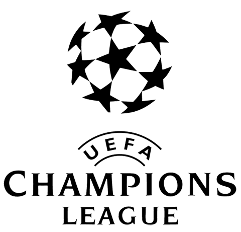

História da Competição
A UEFA Champions League é o torneio de clubes mais prestigiado do futebol mundial. Criada na temporada 1955/56 como Copa dos Clubes Campeões Europeus, a competição reúne as principais equipes do continente europeu em uma disputa repleta de emoção e alto nível técnico.
Curiosidades sobre o Torneio
- O troféu oficial é popularmente conhecido como "A Orelhuda" devido ao formato das suas alças.
- O hino oficial da Champions League foi adaptado da obra "Zadok the Priest", de George Frideric Handel.
- O Real Madrid é o clube mais vencedor e o único a conquistar três títulos consecutivos na era moderna.
- O maior artilheiro da história da UEFA Champions League é o português Cristiano Ronaldo, com 140 gols marcados
- O maior assistente da história da UEFA Champions League é o Cristiano Ronaldo, com 42 passes para gol